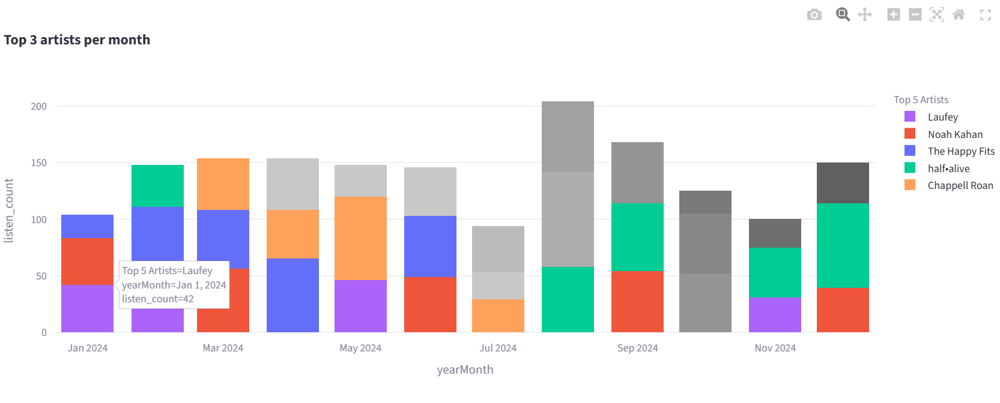
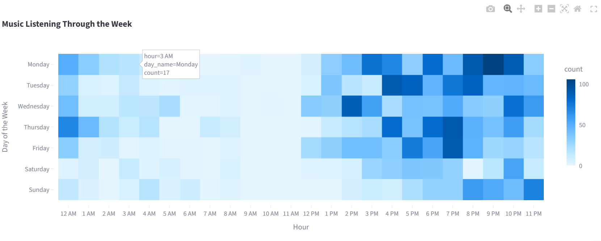
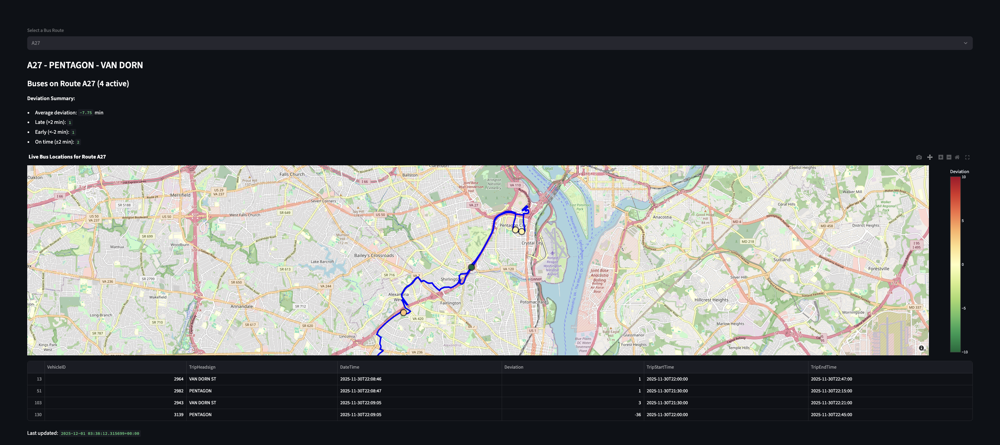
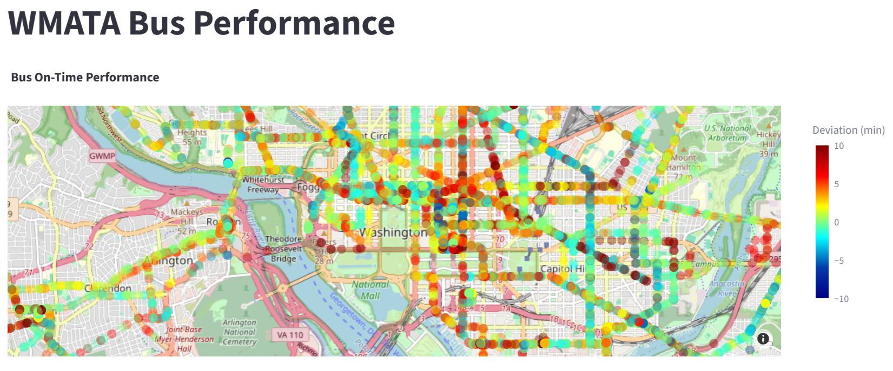
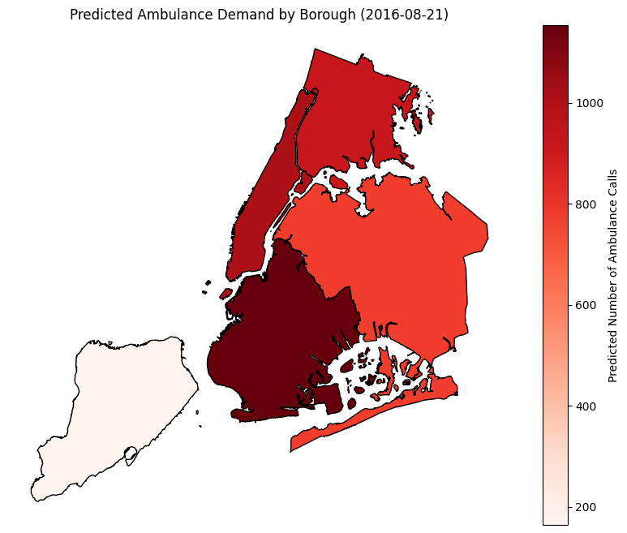

An app created with streamlit that takes in user inputted music listening data from a variety of formats and analyses it. Returns insights and visualizations to help users understand music listening patterns.


Data engineering group project created for DS3022. Processes real time streaming updates from WMATA API to store live bus status in a DuckDB table using a Kafka producer and consumer. Displays current bus location on route and delay time on a streamlit dashboard.


Data design project for DS4320. Project to query from NYC OpenData Portal to get over 1 GB of Emergency Services Call data to load in to SQL Relational Database, integrating with city events, weather, and demographic information. Create machine learning pipeline using a random forest to predict number of EMS calls expected for a given borough.

Opinion paper on need for action in AI Voice Cloning for ENWR1510
Team research paper exploring ethical dimensions of smart cities for DS2024
Team technical research paper exploring aspects of explainability in facial recognition for DS4024